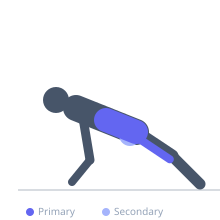
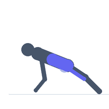

Exercise guide / Copenhagen Plank
Copenhagen Plank
The Copenhagen plank is an advanced side plank variation in which the top leg is supported on a bench or box while the bottom leg hangs or is adducted upward. It is one of the most effective exercises for training the hip adductors under a high-force isometric demand while simultaneously loading the lateral core. Research has demonstrated its effectiveness in both adductor strengthening and groin injury prevention in sports athletes.
Primary muscles
adductor magnus
adductor longus
internal oblique
external oblique
Secondary muscles
gluteus medius
gracilis
transverse abdominis
Stabilizers
erector spinae
tensor fasciae latae
Equipment
Flat Bench
Optional
Adjustable Bench (Incline / Decline)


Starting position
- Position a flat bench alongside you. Rest the top ankle or shin on the bench edge in a side plank position with the forearm on the floor. The bottom leg hangs beneath the bench.
Setup
- Set a bench at a height that challenges the adductors — typically 40–50 cm. The top leg should be supported at the ankle for maximum leverage.
Steps
- Step 1: Set up with the top ankle or shin on the bench, bottom forearm on the floor, and body in a straight side-plank line.
- Step 2: Drive the top leg down into the bench and simultaneously lift the hips off the floor to form a straight plank line.
- Step 3: The bottom leg can either hang (supported hold) or be lifted to meet the top leg (dynamic version).
- Step 4: Hold the position with hips fully extended and body in a straight line.
- Step 5: Lower with control. Perform equal sets on each side.
Coaching cues
- Drive the top leg into the bench
- Keep your hips tall — no sagging
- Straight line from shoulder to ankle
Breathing
- Breathe shallowly and continuously during the hold.
Range of motion
- Full isometric hold with hips elevated and body straight. Progress from short-lever (knee on bench) to long-lever (ankle on bench).
Tempo
- Hold for 10–30 seconds. Progress duration before adding dynamic repetitions.
Common mistakes
- Allowing the hips to drop, reducing adductor tension
- Rotating the torso forward or backward
- Using the ankle — placing the foot on the bench instead of the ankle/shin reduces adductor leverage
Safety
- Groin soreness in the days following initial training is normal — progress load conservatively.
- If experiencing groin pain, regress to a short-lever Copenhagen plank with the knee on the bench.
Training
- strength: 1–1 reps
- strength: 2–4 sets
- Rest: {'strength': 90}